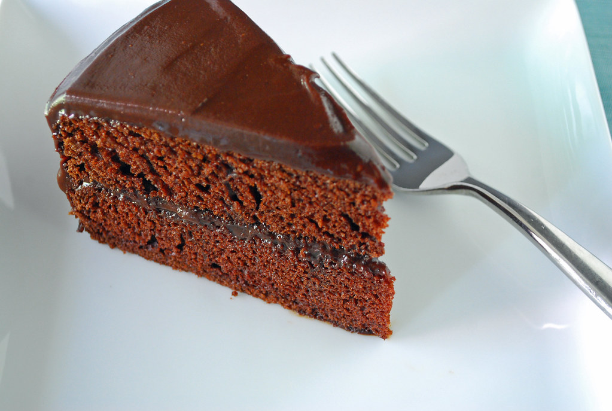

My Favorite Things

My Favorite Foods
- Pizza
- Ice Cream
- Chocolate Cake
- French Fries
- Tiramisu
My Favorite Places to Go
- Durty Nellies
- Scott Stadium
- John Paul Jones Arena
- O'Hill Dining Hall
- Aquatic and Fitness Center
My Favorite Music
- Doors
- Pearl Jam
- Jimi Hendrix
- Robert Johnson
- Red Hot Chili Peppers
My Favorite Movies
- Goodfellas
- Friday
- Star Wars
- Forest Gump
- Shawshank Redemption